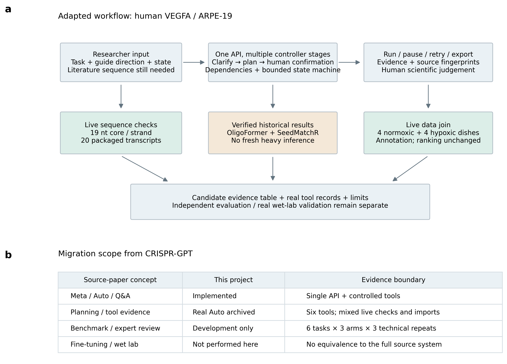
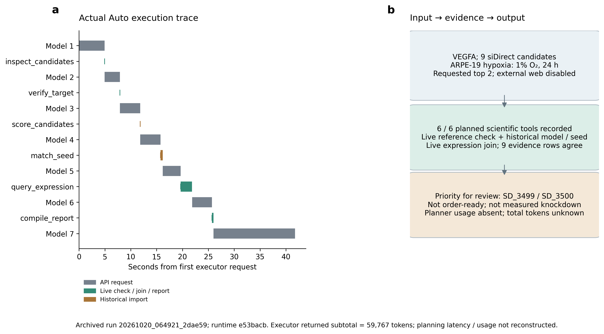
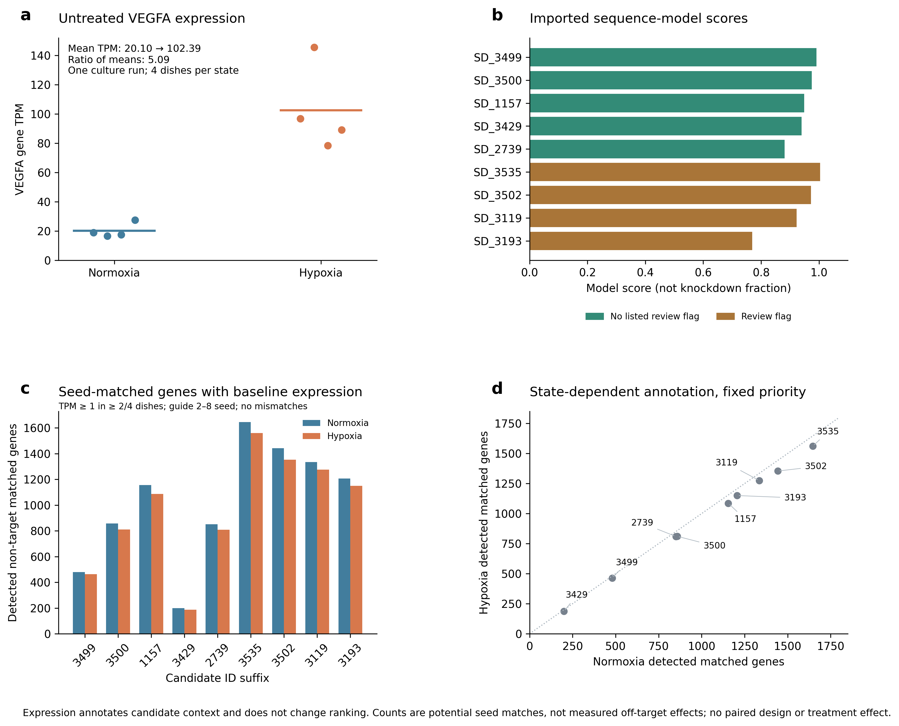
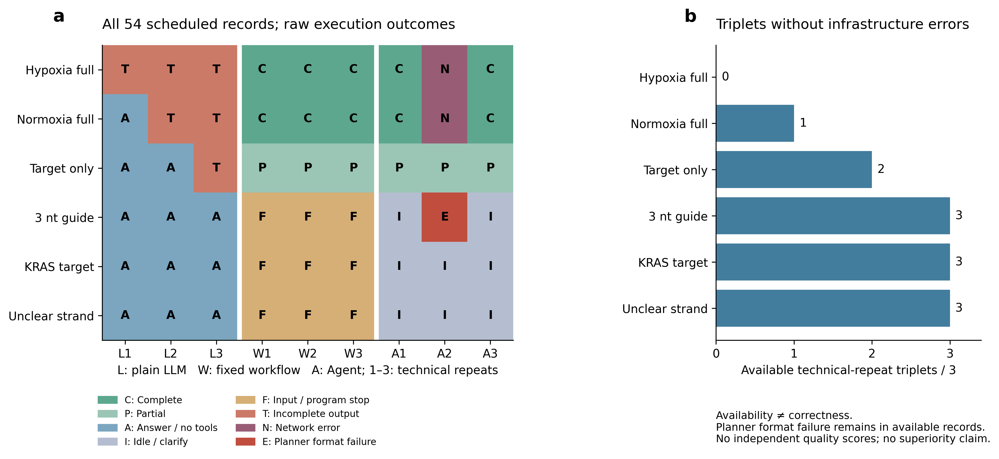

四张组合图来自已归档真实运行和细胞背景数据；不是新增模型推理或湿实验。配对质量评价和独立评分尚未完成。

a，研究者提供任务、候选方向和状态；单一豆包API通过多阶段控制器澄清、规划并经人工确认执行。绿色表示本地实际核对或关联，棕色表示经一致性核查的历史官方输出导入。b，与原文的概念对应和当前实现范围。当前未完成专用微调、独立评价或新湿实验。

a，真实Auto运行20261020_064921_2dae59的执行事件时间轴；横轴从首个执行器请求开始，不包含未保留的规划耗时。七轮执行器API返回与六项工具逐一对应；工具起点竖线使亚毫秒至毫秒级步骤仍可见，横条长度保留实际时间。导入历史结果的步骤不称现场模型推理。b，实际输入、工具证据及优先复核名单。执行器已知token小计59,767；规划轮用量缺失，完整总量未知。没有外部检索，未将本次工具导出替代独立语义评分。

a，同一培养批次、每状态4皿、未转染的VEGFA逐样本TPM；短横线为均值，均值比约5.09，仅为描述。b，9条siDirect计算候选的历史OligoFormer分数；颜色只标已有复核提示，分数不是敲低比例。c，两状态中符合TPM≥1且至少2/4皿的非靶seed匹配基因数；guide第2–8位、0错配、既有代表性3′UTR，未映射与不表达区分保存在底表。d，同一候选两状态的注释计数；虚线为相等计数参考线，未作回归或新风险评分。TPM不进入排序，不推断缺氧特异敲低或实验脱靶。候选不是用户文献序列或订购单。

a，新批次54个记录全部显示，6个已见开发任务×3组×3次技术重复。C完整，P局部完成，A无工具回答，I空闲/澄清，F输入/程序停止，T响应不完整，N网络错误，E规划格式失败。F与I是否恰当必须读答案，不能自动记为正确拒绝。b，18个题目重复单元中12个三组均无基础设施错误；缺氧完整题为0/3。1条E是系统自身失败，仍留在无API错误记录中等待评分。不存在独立科学评分，图不表示准确率、优越性或显著性。